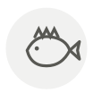

Thornyhead (kinki) ◆
Kinki (sébaste épineux)
| Latin name | Sebastolobus macrochir |
|---|---|
| Family | Fish & seafood |
| Origin | Cold waters off Hokkaido |
| Season | November – February |
| Flavour | Rich · Umami · Sweet · Delicate |
| Typical price | 150–350 €/kg |
What it is
A thornyhead taken from two hundred metres down off Hokkaido, it lays its fat between the muscle fibres rather than under the skin, so it stays wet however long it simmers. It is slow-growing and long-lived, which is why a fish the length of a forearm can cost more than the meal around it and why the price has never come back down.
In the kitchen
Score the skin twice and simmer it nitsuke-style in equal parts sake and water with soy and mirin, spooning the liquid over rather than turning the fish. Twelve minutes at a tremble is enough, and it needs no oil at any point.
Goes with
Koikuchi shoyu Hon-mirin Ginger Junmai sake Negi Silken tofu (kinugoshi)
In season alongside
Splendid alfonsino (kinmedai) Hairy crab Skate wing Tuna belly (toro) Velvet swimming crab Pauillac lamb
Something wrong here, or missing? Tell us